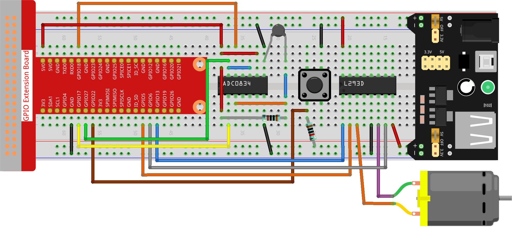

Note
Bonjour et bienvenue dans la communauté SunFounder Raspberry Pi & Arduino & ESP32 sur Facebook ! Plongez plus profondément dans l’univers des Raspberry Pi, Arduino et ESP32 avec d’autres passionnés.
Pourquoi nous rejoindre ?
Support d’experts : Résolvez vos problèmes après-vente et surmontez les défis techniques grâce à l’aide de notre communauté et de notre équipe.
Apprendre et Partager : Échangez des astuces et tutoriels pour améliorer vos compétences.
Aperçus exclusifs : Profitez d’un accès anticipé aux annonces de nouveaux produits et d’aperçus en avant-première.
Réductions spéciales : Bénéficiez de réductions exclusives sur nos nouveaux produits.
Promotions et concours : Participez à des concours et profitez de promotions festives.
üëâ Pr√™t √† explorer et √† cr√©er avec nous ? Cliquez sur [Ici] et rejoignez-nous d√®s aujourd‚Äôhui !
3.1.4 Ventilateur intelligent
Introduction
Dans ce projet, nous utiliserons des moteurs, des boutons et des thermistances pour créer un ventilateur intelligent manuel et automatique dont la vitesse est réglable.
Composants requis
Pour ce projet, nous avons besoin des composants suivants.

Schéma de câblage
T-Board Name |
physical |
wiringPi |
BCM |
GPIO17 |
Pin 11 |
0 |
17 |
GPIO18 |
Pin 12 |
1 |
18 |
GPIO27 |
Pin 13 |
2 |
27 |
GPIO22 |
Pin 15 |
3 |
22 |
GPIO5 |
Pin 29 |
21 |
5 |
GPIO6 |
Pin 31 |
22 |
6 |
GPIO13 |
Pin 33 |
23 |
13 |
Procédure expérimentale
Étape 1 : Construisez le circuit.
Note
Le module d’alimentation peut être utilisé avec une pile 9V et la connexion pour pile 9V fournie dans le kit. Insérez le cavalier du module d’alimentation dans les bandes de bus 5V de la plaque d’expérimentation.

Étape 2 : Accédez au dossier du code.
cd ~/davinci-kit-for-raspberry-pi/python-pi5
Étape 3 : Exécutez le programme.
sudo python3 3.1.4_SmartFan.py
Lorsque le code est exécuté, démarrez le ventilateur en appuyant sur le bouton. Chaque appui ajuste la vitesse d’un cran vers le haut ou vers le bas. Il existe 5 niveaux de vitesse : 0~4. Lorsque le ventilateur est réglé à la 4ème vitesse et que vous appuyez à nouveau, le ventilateur s’arrête avec une vitesse de 0.
Dès que la température augmente ou diminue de plus de 2°C, la vitesse augmente ou diminue automatiquement d’un niveau.
Code
Note
Vous pouvez Modifier/Réinitialiser/Copier/Exécuter/Arrêter le code ci-dessous. Mais avant cela, vous devez vous rendre dans le répertoire source comme davinci-kit-for-raspberry-pi/python-pi5. Après avoir modifié le code, vous pouvez l’exécuter directement pour voir l’effet.
#!/usr/bin/env python3
from gpiozero import Motor, Button
from time import sleep
import ADC0834
import math
# Initialisation des broches GPIO pour le bouton et le contrôle du moteur
BtnPin = Button(22)
motor = Motor(forward=5, backward=6, enable=13)
# Initialisation du module ADC0834 pour la détection de température
ADC0834.setup()
# Initialisation des variables pour suivre le niveau de vitesse du moteur et les températures
level = 0
currentTemp = 0
markTemp = 0
def temperature():
"""
Reads and calculates the current temperature from the sensor.
Returns:
float: The current temperature in Celsius.
"""
# Lire la valeur analogique depuis le module ADC0834
analogVal = ADC0834.getResult()
# Conversion de la valeur analogique en tension puis en résistance
Vr = 5 * float(analogVal) / 255
Rt = 10000 * Vr / (5 - Vr)
# Calcul de la température en Celsius
temp = 1 / (((math.log(Rt / 10000)) / 3950) + (1 / (273,15 + 25)))
Cel = temp - 273,15
return Cel
def motor_run(level):
"""
Adjusts the motor speed based on the specified level.
Args:
level (int): Desired motor speed level.
Returns:
int: Adjusted motor speed level.
"""
# Arrêter le moteur si le niveau est 0
if level == 0:
motor.stop()
return 0
# Limiter le niveau à 4 pour la vitesse maximale
if level >= 4:
level = 4
# Définir la vitesse du moteur
motor.forward(speed=float(level / 4))
return level
def changeLevel():
"""
Changes the motor speed level when the button is pressed and updates the reference temperature.
"""
global level, currentTemp, markTemp
print("Button pressed")
# Passer à travers les niveaux 0-4
level = (level + 1) % 5
# Mettre à jour la température de référence
markTemp = currentTemp
# Lier l'événement de pression du bouton à la fonction changeLevel
BtnPin.when_pressed = changeLevel
def main():
"""
Main function to continuously monitor and respond to temperature changes.
"""
global level, currentTemp, markTemp
# Définir la température de référence initiale
markTemp = temperature()
while True:
# Lire en continu la température actuelle
currentTemp = temperature()
# Ajuster le niveau du moteur en fonction de la différence de température
if level != 0:
if currentTemp - markTemp <= -2:
level -= 1
markTemp = currentTemp
elif currentTemp - markTemp >= 2:
if level < 4:
level += 1
markTemp = currentTemp
# Faire tourner le moteur au niveau ajusté
level = motor_run(level)
# Exécuter la fonction principale et gérer l'interruption par clavier
try:
main()
except KeyboardInterrupt:
# Arrêter le moteur lorsque le script est interrompu
motor.stop()
Explication du Code
Importe les classes pour gérer un moteur et un bouton, ainsi que la fonction sleep pour introduire des pauses. Le script importe également la bibliothèque ADC0834 pour la détection de température et la bibliothèque mathématique math pour effectuer des calculs.
#!/usr/bin/env python3 from gpiozero import Motor, Button from time import sleep import ADC0834 import math
Configure le bouton sur la broche GPIO 22 et initialise le moteur avec des broches GPIO spécifiques pour le contrôle. Initialise le module ADC0834 pour la mesure de la température. Définit également des variables pour suivre le niveau de vitesse du moteur et les températures.
# Initialisation des broches GPIO pour le bouton et le contrôle du moteur BtnPin = Button(22) motor = Motor(forward=5, backward=6, enable=13) # Initialisation du module ADC0834 pour la détection de température ADC0834.setup() # Initialisation des variables pour suivre le niveau de vitesse du moteur et les températures level = 0 currentTemp = 0 markTemp = 0
Définit une fonction pour lire et calculer la température à partir du capteur, en convertissant la valeur lue en degrés Celsius.
def temperature(): """ Reads and calculates the current temperature from the sensor. Returns: float: The current temperature in Celsius. """ # Lire la valeur analogique depuis le module ADC0834 analogVal = ADC0834.getResult() # Convertir la valeur analogique en tension, puis en résistance Vr = 5 * float(analogVal) / 255 Rt = 10000 * Vr / (5 - Vr) # Calculer la température en Celsius temp = 1 / (((math.log(Rt / 10000)) / 3950) + (1 / (273.15 + 25))) Cel = temp - 273.15 return Cel
Introduit une fonction pour ajuster la vitesse du moteur en fonction du niveau spécifié.
def motor_run(level): """ Adjusts the motor speed based on the specified level. Args: level (int): Desired motor speed level. Returns: int: Adjusted motor speed level. """ # Arrête le moteur si le niveau est 0 if level == 0: motor.stop() return 0 # Limite le niveau à 4 pour la vitesse maximale if level >= 4: level = 4 # Définit la vitesse du moteur motor.forward(speed=float(level / 4)) return level
Implémente une fonction pour changer le niveau de vitesse du moteur manuellement à l’aide d’un bouton, et lie cette fonction à l’événement de pression du bouton.
def changeLevel(): """ Changes the motor speed level when the button is pressed and updates the reference temperature. """ global level, currentTemp, markTemp print("Button pressed") # Parcourt les niveaux 0-4 level = (level + 1) % 5 # Met à jour la température de référence markTemp = currentTemp # Lie l'événement de pression du bouton à la fonction changeLevel BtnPin.when_pressed = changeLevel
La fonction principale, conçue pour ajuster continuellement la vitesse du moteur en réponse aux variations de température, est implémentée ici.
def main(): """ Main function to continuously monitor and respond to temperature changes. """ global level, currentTemp, markTemp # Définit la température de référence initiale markTemp = temperature() while True: # Lit en continu la température actuelle currentTemp = temperature() # Ajuste le niveau du moteur en fonction de la différence de température if level != 0: if currentTemp - markTemp <= -2: level -= 1 markTemp = currentTemp elif currentTemp - markTemp >= 2: if level < 4: level += 1 markTemp = currentTemp # Fait tourner le moteur au niveau ajusté level = motor_run(level)
Exécute la fonction principale et garantit que le moteur s’arrête si le script est interrompu.
# Exécute la fonction principale et gère l'interruption par clavier try: main() except KeyboardInterrupt: # Arrête le moteur lorsque le script est interrompu motor.stop()